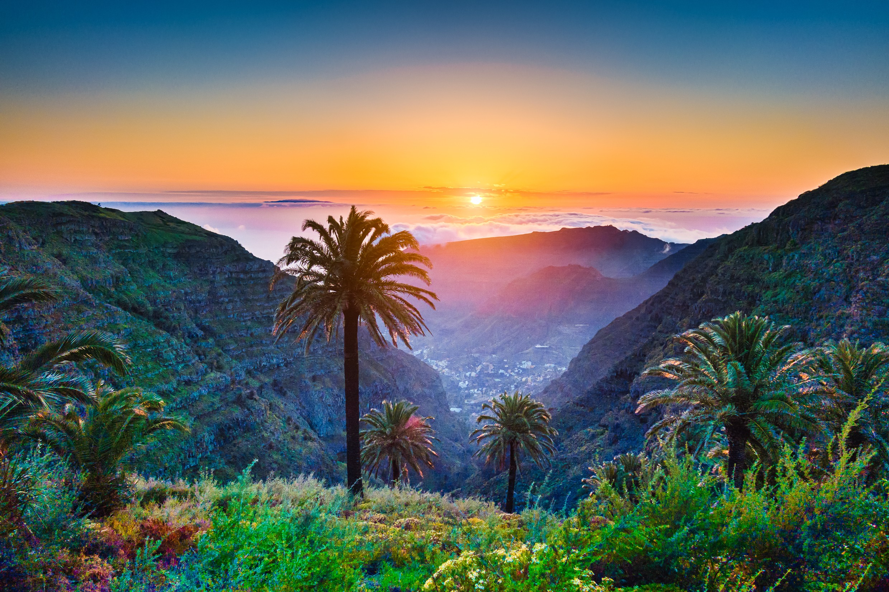
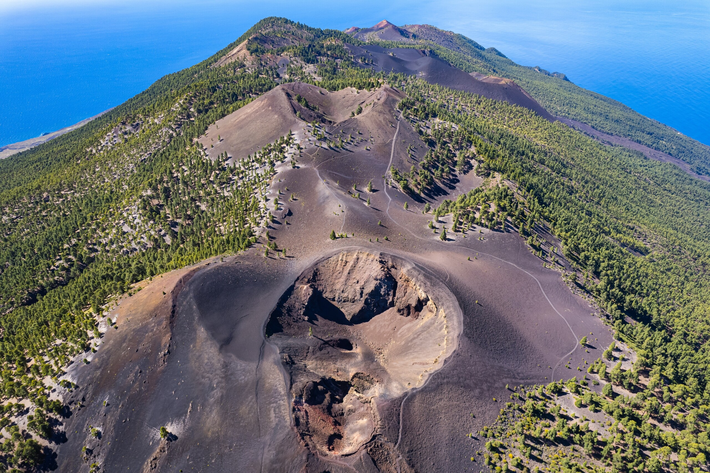
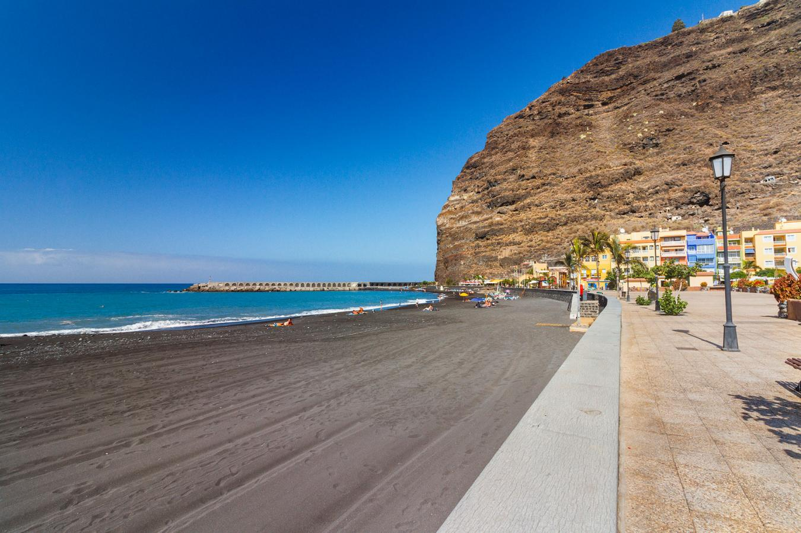

Poznaj La Palmę!
La Palma, nazywana również „La Isla Bonita” (Piękną Wyspą), to klejnot archipelagu Wysp Kanaryjskich. Znana z bujnej przyrody, stromych klifów i krystalicznie czystego nieba, jest rajem dla miłośników natury, astronomii i spokoju.
Centralnym punktem La Palmy jest spektakularna Kaldera Taburiente – olbrzymi krater wulkaniczny otoczony górskimi szczytami i lasami sosnowymi. To idealne miejsce na trekking, z malowniczymi szlakami.

Wyspa jest także znana ze swojego wulkanicznego krajobrazu, szczególnie w południowej części, gdzie znajdują się młode stożki wulkaniczne, takie jak Teneguía i Cumbre Vieja. Te tereny ukazują surową, pierwotną siłę natury i są doskonałym miejscem na piesze wędrówki.
Plaże La Palmy to ukryte perełki. Wulkaniczne, czarne piaski, takie jak na Playa de Nogales czy Charco Verde, oferują dzikość i spokój w otoczeniu naturalnych krajobrazów. To miejsca, gdzie można poczuć bliskość oceanu i zrelaksować się w kameralnej atmosferze.
La Palma urzeka również kuchnią – od aromatycznych gulaszy, takich jak rancho canario, po słodkie przysmaki, jak bienmesabe – tradycyjny deser na bazie migdałów. Wyspa słynie też z lokalnych win, które idealnie komponują się z kanaryjskimi specjałami.

Dzięki harmonii między naturą, tradycją i spokojem, La Palma jest idealnym miejscem na ucieczkę od zgiełku. To wyspa, która zachęca do kontemplacji, przygody i odkrywania piękna w najczystszej formie.